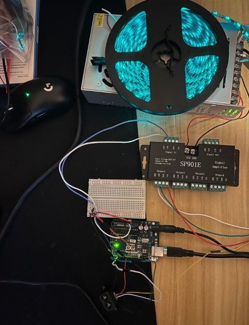
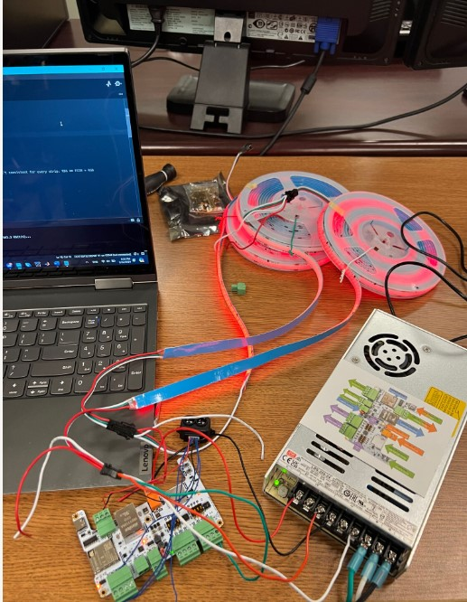
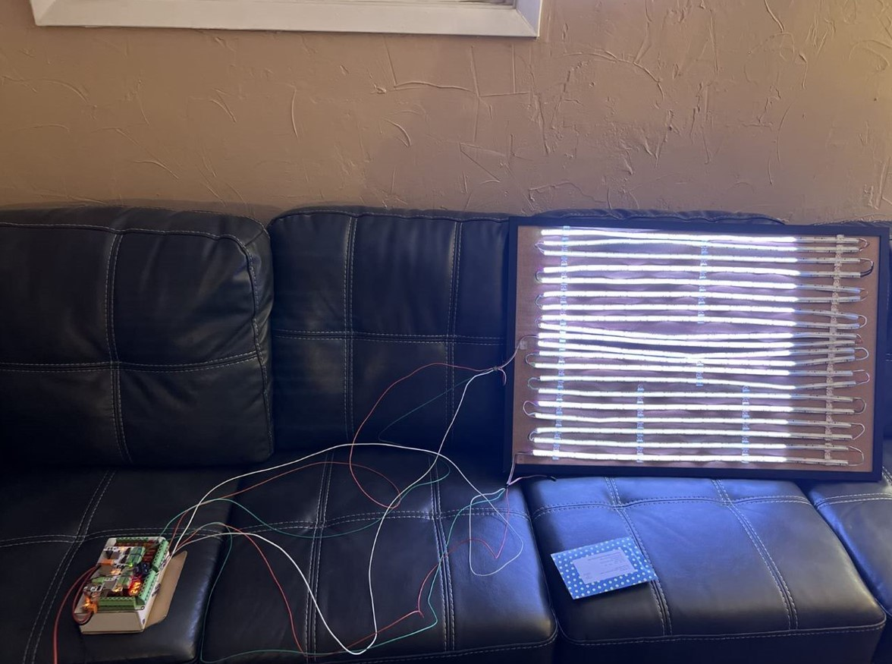
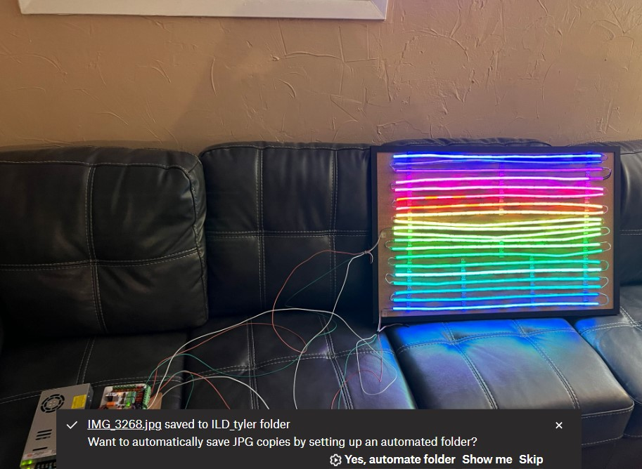
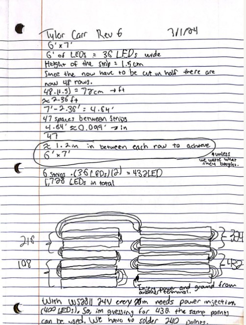

Group Role → ⚡ Hardware and Software Developer ⚡
Tyler's Brief Description
"
Tyler Carr's hardware and software application allows the LEDs to function throughout user interaction. Tyler used Arduino libraries to program this interaction using wavelengths from the LiDAR sensor.
The LiDAR sensor then sends the signal to the microcontroller (ESP-32) and provides the appropriate light for the LEDs depending on the wavelength.
Tyler also researched the power requirements to support the LEDs to ensure no hazardous burnouts or overheating occur while the LEDs are in use.
Additionally, Tyler provided schematics to the team to ensure the hardware is feasible within the constraints of the structure. Tyler also tested the prototype for potential sync errors, glow diffusion, and soldering issues."





♦Computer Engineer, Tyler♦